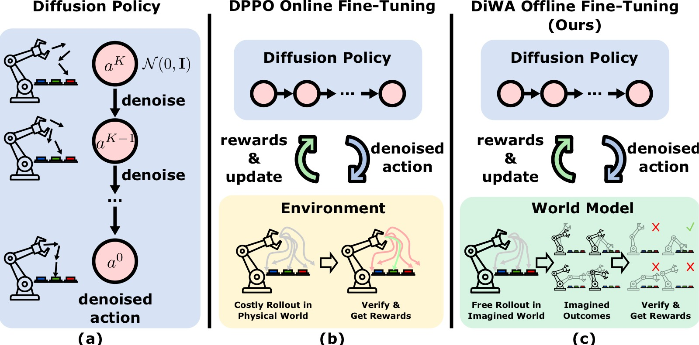
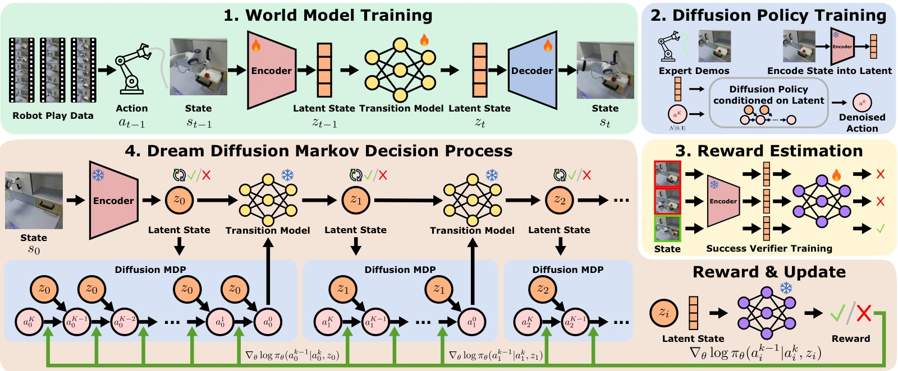
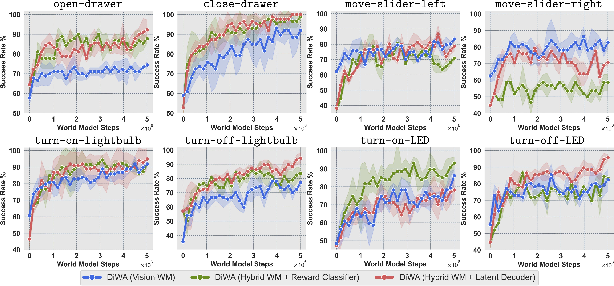
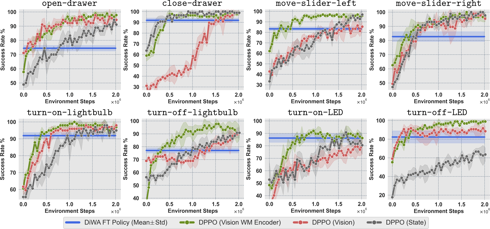
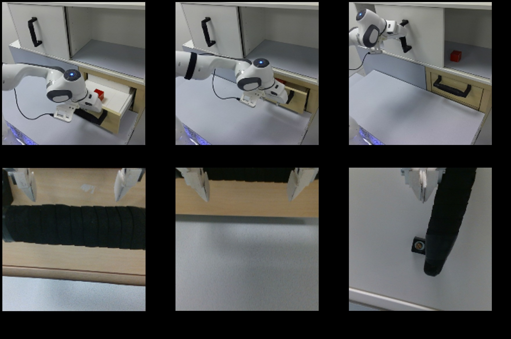
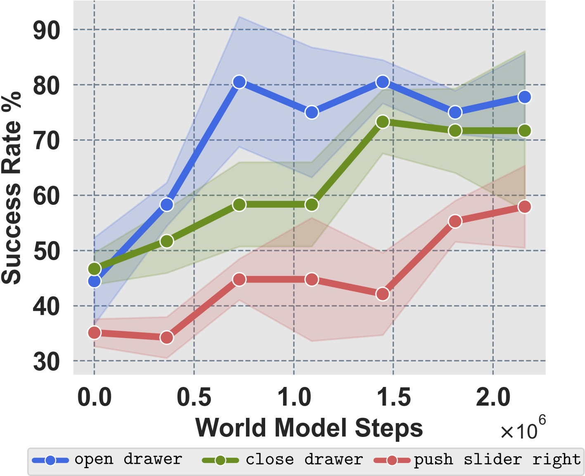
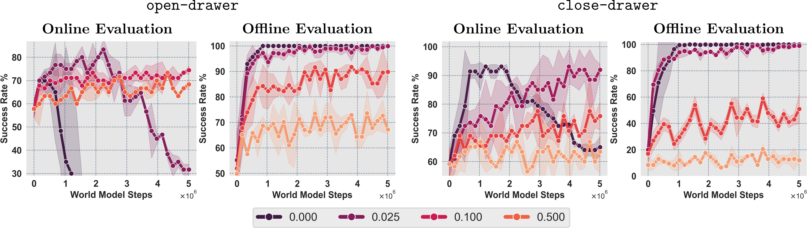
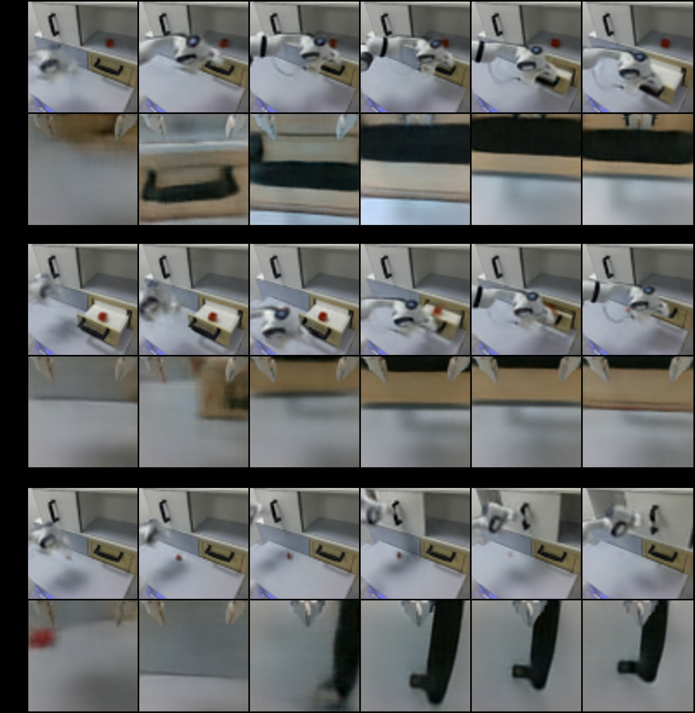

DiWA: Diffusion Policy Adaptation with World Models
论文信息 - 作者：Akshay L Chandra$^{*}$, Iman Nematollahi$^{*}$, Chenguang Huang, Tim Welschehold, Wolfram Burgard, Abhinav Valada - 通讯作者：Abhinav Valada（University of Freiburg） - 投稿方向：CoRL 2025 - arXiv ID：2508.03645 - 项目主页：https://diwa.cs.uni-freiburg.de - 代码：https://github.com/acl21/diwa
一、核心问题
扩散策略（Diffusion Policy）在机器人模仿学习中表现优异，但纯 Behavior Cloning 训练的策略受限于专家数据的覆盖范围和质量，面对分布偏移（distribution shift）时容易失败。自然地，可以用强化学习（RL）对预训练策略进行微调。
现有 SOTA 方法 DPPO（Diffusion Policy Policy Optimization）将扩散去噪过程建模为多步 MDP，用 PPO 进行在线微调，但存在致命缺陷：需要数百万次真实环境交互，在实际机器人场景中既不安全也不可行。
本文核心问题：能否完全离线地微调扩散策略，而不需要任何真实或仿真环境交互？

图1：三种扩散策略学习范式的对比示意图，展示从数据到策略部署的完整链路。
子图 (a) 标准 Diffusion Policy（BC 预训练）：左侧为离线专家演示数据（机器人操作抽屉/开关灯等任务的 RGB 观测序列），中间是扩散策略通过 Behavior Cloning 学习去噪过程——从纯噪声逐步恢复出动作。但由于 BC 的本质限制，策略只能模仿数据中已有的行为，面对分布外（OOD）状态时会累积误差导致失败。右侧为直接将预训练策略部署到真实机器人——没有任何适应步骤，性能完全受限于演示质量。
子图 (b) DPPO 在线微调：在 BC 预训练基础上，DPPO 将扩散去噪过程建模为多步 MDP，通过 PPO 在真实/仿真环境中进行在线策略梯度微调。中间展示的是机器人与环境反复交互——执行动作、收集奖励、更新策略。问题在于：每个 skill 需要数十万到数百万步在线交互（CALVIN 上总计约 250 万步），在真实机器人上这意味着数天的不间断操作、硬件磨损以及安全风险。
子图 (c) DiWA 离线微调（本文方法）：核心创新——用一个在无结构 play 数据上预训练并冻结的世界模型替代真实环境。微调完全在 WM 的 latent 空间中通过"想象 rollout"进行（中间紫色方块），不需要任何物理交互。左侧依然是离线数据（play 数据 + 少量 expert demo），右侧直接将微调后的策略 zero-shot 部署到真实机器人。整个适应过程安全、高效，物理交互次数为 0。
二、核心思路 / 方法
2.1 整体框架：四阶段训练
DiWA 的训练分为四个阶段（图 2）：
- 世界模型训练：在无标签的 play 数据 $\mathcal{D}_{\text{play}}$ 上训练 latent dynamics model，学习环境的紧凑隐空间表征
- 扩散策略预训练：在专家演示 $\mathcal{D}_{\text{exp}}$ 上通过 Behavior Cloning 预训练扩散策略（使用 WM 编码的 latent 作为输入）
- 奖励分类器训练：在 latent 空间训练二分类器 $C_\psi$，从专家数据中学习任务成功/失败的判别信号
- Dream Diffusion MDP 中微调：在 WM 的 latent 空间中展开想象 rollout，用 PPO + BC 正则化微调扩散策略

图2：DiWA 完整四阶段框架图，从左到右依次展示从数据到部署的全链路。
阶段 ① — 世界模型训练（World Model Learning）：从无结构的 teleoperation play 数据 $\mathcal{D}_{\text{play}}$ 出发（包含多视角 RGB 观测 + 机器人本体感知），通过双路视觉编码器（static camera + wrist camera）提取特征后融合，送入 RSSM 学习 latent 动力学。RSSM 维护确定性状态 $h_t$（1024 维 GRU）和随机状态 $z_t$（32×32 categorical = 1024 维 one-hot），总 latent 维度 2048。通过 decoder 重建图像来监督训练，目标为负 ELBO。训练完成后 WM 冻结。数据量：CALVIN ~6 小时（50 万步），真机 ~4 小时（45 万步）。
阶段 ② — 扩散策略预训练（Diffusion Policy Pre-training）：用冻结的 WM encoder 将专家演示 $\mathcal{D}_{\text{exp}}$ 中的 RGB 观测编码为 2048 维 latent 向量 $z_t$。扩散策略（3 层 MLP [512,512,512]，DDPM $K=20$ 步去噪）通过 Behavior Cloning 学习从噪声恢复专家动作。输入为 1 步观测 latent，预测未来 $T_p=4$ 步动作，执行 $T_a=4$ 步。每 skill 仅需 50 条专家演示，训练 5000 epochs，使用 EMA（decay=0.995）稳定权重。
阶段 ③ — 奖励分类器训练（Reward Classifier Training）：在 latent 空间训练二分类器判断任务成功/失败。架构为双组件——Embedding MLP [512,512] 通过 NT-Xent 对比损失学习判别性表征，Classification MLP [512,512] 通过交叉熵做最终分类。正样本来自专家演示中的成功帧标注，负样本随机采样 15% 的其余帧。联合损失 $\mathcal{L}_{\text{reward}} = \mathcal{L}_{\text{NT-Xent}} + \mathcal{L}_{\text{CE}}$。关键性能：平均 precision 0.89 / recall 0.98（仅 50 demo/skill），远超基于原始像素的 ResNet-18（precision 仅 0.41）。
阶段 ④ — Dream Diffusion MDP 中微调（Fine-tuning in Dream Diffusion MDP）：核心创新模块。将扩散去噪过程嵌入 WM MDP 形成双层 MDP $\mathcal{M}_{\text{DD}}$。在 latent 空间中展开想象 rollout：每个 WM 时间步内执行 $K=20$ 步去噪（仅最后 $K'=10$ 步参与梯度更新），$k=1$ 时通过 WM 转移到下一个 latent 状态并用 reward classifier 给出奖励。PPO 在收集的想象轨迹上做策略更新，BC 正则化项（$\alpha_{\text{BC}}=0.05$）约束策略不偏离预训练分布太远。微调步数：CALVIN ~500 万想象步，真机 ~200 万想象步。右侧为将微调后的策略直接 zero-shot 部署到真实机器人，整个过程零物理交互。
2.2 世界模型：DreamerV2 风格 RSSM
世界模型 $\mathcal{M}_{\text{wm}} = (\mathcal{Z}, \mathcal{A}, P_\phi)$ 采用 DreamerV2 的 recurrent state-space model（RSSM）架构：
- 编码器：双路视觉编码（static camera + wrist camera），特征拼接后送入 RSSM
- 确定性状态 $h_t$：1024 维，通过 GRU 式循环更新
- 随机状态 $z_t$：32 个 categorical 变量，每变量 32 类 → 稀疏 1024 维 one-hot
- 总 latent 维度：$k = 2048$（$h_t$ 和 $z_t$ 拼接）
- 解码器：从 latent 重建 RGB 图像
- 训练目标：负 ELBO，带 KL balancing（$\delta = 0.8$）稳定训练
世界模型在约 50 万步 play 数据上一次性训练完成，训练后冻结，不再更新。
2.3 扩散策略预训练
- 使用世界模型 encoder 将原始观测编码为 2048 维 latent 向量
- 策略架构：3 层 MLP（每层 512 维），DDPM 去噪，$K = 20$ 步
- 观察窗口 1 步，预测 $T_p = 4$ 步未来动作，执行 $T_a = 4$ 步
- 每 skill 仅需 50 条专家演示
- 训练 5000 epochs，使用 EMA（decay=0.995）稳定权重
2.4 潜在奖励估计
在 latent 空间训练成功分类器 $C_\psi$：
- 双组件架构：Embedding MLP（[512,512]）→ 对比学习（NT-Xent） + Classification MLP（[512,512]）→ 交叉熵
- 联合损失：$\mathcal{L}_{\text{reward}} = \mathcal{L}_{\text{NT-Xent}} + \mathcal{L}_{\text{CE}}$
- 精度：平均 precision 0.89，recall 0.98（仅需 50 demonstrations/skill）
- 对比：ResNet-18 视觉分类器 precision 仅 0.41（recall 相同 0.98）
关键洞察：WM 的时序结构化 latent 空间自带强归纳偏置，使得奖励分类器即使在小样本下也能高精度区分成功/失败状态。
各任务 latents-based classifier 与 vision-based ResNet-18 的对比：
| 任务 | Latents Precision | Latents Recall | Vision Precision | Vision Recall |
|---|---|---|---|---|
| Open Drawer | 0.92 | 0.99 | 0.41 | 0.99 |
| Close Drawer | 0.89 | 0.99 | 0.52 | 0.99 |
| Left Slider | 0.87 | 0.96 | 0.33 | 0.97 |
| Right Slider | 0.83 | 0.98 | 0.41 | 0.99 |
| Light On | 0.89 | 0.96 | 0.45 | 0.99 |
| Light Off | 0.88 | 0.99 | 0.36 | 1.00 |
| LED On | 0.94 | 1.00 | 0.36 | 0.92 |
| LED Off | 0.88 | 0.99 | 0.41 | 0.99 |
| 平均 | 0.89 | 0.98 | 0.41 | 0.98 |
两种分类器 recall 几乎相同（0.98），但 precision 差距悬殊（0.89 vs 0.41）。ResNet-18 的高 recall 低 precision 意味着它把大量负样本（非成功帧）误判为正样本——这在 RL 微调中会导致稀疏的正奖励被噪声淹没。WM latent 分类器的高 precision 确保奖励信号的可靠性。
2.5 Dream Diffusion MDP：核心创新
这是 DiWA 最核心的理论贡献。将扩散去噪过程嵌入世界模型 MDP，形成一个统一的 Dream Diffusion MDP $\mathcal{M}_{\text{DD}}$：
- 双层时间索引 $\bar{t}(t,k) = tK + (K-k)$：外层是世界模型时间步 $t$，内层是去噪步 $k$（从 $K$ 递减到 $1$）
- 状态：$\bar{s}_{\bar{t}(t,k)} = (z_t, \bar{a}_t^{k})$——latent 状态 + 当前噪声动作
- 动作：$\bar{a}_{\bar{t}(t,k)} = \bar{a}_t^{k-1}$——去噪一步后的动作
- 奖励：只在 $k=1$（最终去噪步）时给 reward classifier 的输出，其余去噪步为 0
- 转移：
- $k > 1$ 时：在 latent 空间内去噪（Dirac delta 转移）
- $k = 1$ 时：执行动作 $a_t^0$，通过世界模型转移到 $z_{t+1}$，并从新噪声开始下一轮扩散
2.6 PPO 微调 + BC 正则化
微调目标 = PPO clip loss + BC 正则化项：
- 去噪折扣 $\gamma_\text{denoise}$：对早期（噪声更大的）去噪步的 advantage 进行衰减，因为早期去噪步对最终动作的影响较小
- BC 正则化 $\alpha_\text{BC}$（默认 0.05）：约束微调后的策略不要偏离预训练策略太远，防止利用 WM 的建模误差（model exploitation）
- 仅微调最后 $K'=10$ 步去噪：前 $K-K'=10$ 步保持冻结，减少计算量
- GAE：仅在 $k=1$ 步计算，然后用去噪折扣传播到更早的去噪步
三、训练目标
3.1 世界模型（ELBO）
3.2 扩散策略 BC 预训练
3.3 奖励分类器（Contrastive + CE）
3.4 Dream Diffusion MDP 策略梯度
四、实验与结果
4.1 仿真实验：CALVIN Benchmark（8 个任务）
| 任务 | 预训练 SR | DiWA 微调 SR | DPPO (WM Enc) 需多少步追上 | DPPO (Vision) 需多少步追上 |
|---|---|---|---|---|
| Open Drawer | 57.78 | 74.44 | 117,600 | 134,400 |
| Close Drawer | 59.14 | 91.95 | 345,600 | 1,545,600 |
| Left Slider | 62.15 | 83.33 | 270,933 | 1,377,600 |
| Right Slider | 62.55 | 82.76 | 249,600 | 537,600 |
| Light On | 60.61 | 91.92 | 302,933 | 588,000 |
| Light Off | 35.63 | 77.01 | 327,066 | 1,260,000 |
| LED On | 48.43 | 86.21 | 494,933 | 2,251,200 |
| LED Off | 55.25 | 82.33 | 277,333 | 184,800 |
| 总物理交互 | — | 0 | ~2.5M | ~8M |
关键发现：
- DiWA 在所有 8 个任务上一致提升，物理交互次数为 0
- DPPO 需要数十万到数百万步在线交互才能达到同等性能
- DPPO (Vision WM Encoder) 变体始终优于 DPPO (Vision) 变体，说明 WM latent 表征比 ViT 编码更丰富
逐任务分析：
Open Drawer（+16.66pp）：DPPO 变体间差距最小（Vision WM Enc 11.8 万步 vs Vision 13.4 万步），因为"拉抽屉"动作相对单一、视觉特征明显。
Close Drawer（+32.81pp）：提升幅度第三大，DPPO (Vision) 需要约 154.6 万步——是 DPPO (Vision WM Enc) 的 4.5 倍。这是"推"动作的场景——因为从像素空间判断推的方向和力度更困难。
Light On（+31.31pp）：从 60.61% 提升至 91.92%，性能最高。开关灯按钮大、颜色对比强，WM latent 容易捕捉状态变化，奖励分类器 precision 0.89 也属于较高水平。
Light Off（+41.38pp）：提升幅度最大——预训练基线仅 35.63%（最低），说明"关灯"是 BC 策略最难掌握的任务之一。这可能是因为专家演示中"关灯"的方式多样（不同角度、不同力度），BC 策略难以统一。WM 微调通过 RL 探索找到了有效动作模式。
LED On/Off（+37.78pp / +27.08pp）：LED 灯比主灯更小、视觉信号更弱，但 DiWA 仍实现大幅提升。DPPO (Vision) 在 LED On 上需要约 225 万步——8 个任务中最高值，因为从 RGB 像素中识别小型 LED 的状态变化非常困难。WM latent 通过时序建模（历史帧中的 LED 状态对比）大幅降低了这一难度。

图3：三种 DiWA 变体在 8 个 CALVIN 任务上的微调性能对比。横轴为 8 个操作任务，纵轴为 Success Rate（%，3 seeds 平均）。每个任务有 3 组柱（蓝/绿/红），对应三种 WM 配置。黑色虚线为预训练基线（未微调的扩散策略）。
子图解读——三种变体从低到高排列：
蓝色（Vision WM）— 主实验配置：仅使用视觉观测（static + wrist camera RGB）训练世界模型，奖励信号来自学习到的 latent reward classifier。这是 DiWA 的默认配置，优点是仅需 RGB 相机即可部署到真实机器人，不需要 scene state 访问权限。各项任务微调后 SR：Open Drawer 74.44、Close Drawer 91.95、Left Slider 83.33、Right Slider 82.76、Light On 91.92、Light Off 77.01、LED On 86.21、LED Off 82.33。关键：虽然 WM 仅有视觉监督，但 latent dynamics 已足够支撑有效的策略改进——所有任务相比预训练基线均有 13-41 个百分点的大幅提升。
绿色（Hybrid WM + Reward Classifier）— 增强 WM 但保持分类器：世界模型训练时额外引入场景状态（scene state）作为监督信号，使 latent dynamics 更准确。但奖励仍使用学习到的分类器。各任务普遍优于 Vision WM：在 Left Slider（~87% vs ~83%）、LED On（~88% vs ~86%）、Light Off（~80% vs ~77%）上优势明显。这验证了更准确的 WM 直接转化为更好的想象 rollout 质量，进而提升微调效果。
红色（Hybrid WM + Latent Decoder）— 最优配置：使用最准确的世界模型（Hybrid），且奖励信号从 latent 直接解码状态变量并通过规则函数计算（如判断抽屉位置是否超过阈值），完全消除奖励分类器的不确定性。在大多数任务上达到最高 SR：Right Slider ~90%、Close Drawer ~96%、LED Off ~90%。这揭示了 DiWA 框架的性能上限由两个因素决定——WM 的动力学精度和奖励信号的准确度，两者叠加可带来最大增益。但此配置需要 scene state，无法直接用于纯视觉的真实机器人场景。
总体趋势：Vision WM → Hybrid WM + RC → Hybrid WM + Decoder 呈递增趋势，验证了论文的核心论点——更强的世界模型和更精确的奖励信号是离线微调成功的两个关键维度。Vision WM 虽然绝对性能略低，但作为纯视觉方案，在可部署性上具有不可替代的优势。
4.2 DPPO 各变体详细对比

图S1：DPPO 三种输入模态变体在 8 个 CALVIN 任务上的在线学习曲线对比（8 个子图，每子图对应一个任务）。横轴为 Environment Steps（环境交互步数，线性刻度），纵轴为 Success Rate（%，3 seeds 平均，阴影区域为标准差）。四条曲线/带含义如下：
灰色曲线 — DPPO (State)：直接使用仿真器 ground-truth 状态作为输入（51 维，含物体位姿等特权信息）。在多数任务上启动快——因为状态信息最精确、无视觉感知噪声。但波动较大（灰色阴影带宽），说明纯状态策略对随机种子和探索噪声敏感。最终性能在多数任务上集中在 70-85% 区间。该变体仅存在于 CALVIN 仿真中（真机无 ground-truth state）。
红色曲线 — DPPO (Vision)：使用 ViT encoder 处理原始 RGB 图像（64×64×6 = static + gripper 堆叠）。学习最慢——在 Close Drawer 任务上约 60 万步才达到 50% SR，而 DPPO (WM Enc) 仅需约 35 万步。在 Light Off 任务上接近 100 万步时仍低于 60%。这揭示了一个重要结论：通用的 ViT 图像编码缺乏时序结构和动力学先验，导致从高维像素直接学习策略梯度效率极低。
绿色曲线 — DPPO (Vision WM Encoder)：使用与 DiWA 相同的 frozen WM encoder 处理视觉输入（2048 维 latent）。在所有三个在线变体中表现最强且最稳定（绿色阴影最窄）。关键优势：WM encoder 输出的 latent 包含时序一致的动力学表征——确定性 $h_t$ 捕捉历史信息，随机 $z_t$ 编码瞬时不确定性。在 Open Drawer 上仅需约 12 万步即追上 DiWA，而 DPPO (Vision) 需要约 13 万步。在 Close Drawer 和 Light On 上约 30 万步达到 DiWA 水平。
蓝色水平带 — DiWA（本文方法）：作为完全离线方法，微调阶段环境交互步数为 0。蓝色带上下界对应 3 个 seed 的 ±1 标准差范围。DiWA 的 SR 值直接取自表 1 的离线微调结果。这条水平线是本图的参照基准——DPPO 变体的每条曲线需要多少环境交互步才能穿过这个带，就代表追上 DiWA 的成本。
逐任务关键观察：Open Drawer——DPPO (Vision WM Enc) 只需 ~11.8 万步追上，差距最小（DiWA 提升绝对值约 17pp）。Close Drawer——三种 DPPO 变体差距拉大，(Vision WM Enc) 约 34.6 万步，(Vision) 飙升至约 154.6 万步（相差约 4.5 倍），凸显了 WM latent 在复杂操作任务上的表征优势。LED On——差距最大，(Vision) 需要约 225 万步才能匹配 DiWA（相差约 4.5 倍），因为 LED 的颜色变化在像素空间中信息稀疏、难以从高维视觉直接学出有效的策略梯度。Light Off——预训练 SR 最低（35.63%），DiWA 提升最大（+41pp），说明离线微调对初始性能差的任务收益最显著。
核心结论：DPPO (Vision WM Encoder) 虽然是三种在线变体中最好的，但 8 个任务累计仍需约 250 万步在线交互。DiWA 以零交互实现同等甚至更优的性能，证明了世界模型替代真实环境进行策略微调的有效性。
4.3 真机实验（3 个任务）
在 Franka Emika Panda 机器人上测试了 3 个任务（开抽屉、关抽屉、推滑条），使用 4 小时 teleoperation play 数据（~45 万步）+ 每 skill 50 条 expert demo。
 (a) Real-world Manipulation Skills |
 (b) Real-World Fine-Tuning Results |
图4：真机实验任务与微调结果。论文中两者为同一 figure 的子图 (a) 和 (b)，此处并排展示。
子图 (a) — 真实世界操作任务：三个任务的 RGB 观测可视化——Open Drawer（左）、Close Drawer（中）、Push Slider Right（右）。实验平台为 Franka Emika Panda 7-DoF 机械臂，桌面场景包含柜子和抽屉。观测来自双摄像头——static Azure Kinect（第三人称全景）和 wrist-mounted Realsense D415（夹爪视角近景），分辨率 200×200，下采样至 64×64 用于训练。三个任务共享同一世界模型（4 小时 play 数据训练），分别微调各自的扩散策略（每 skill 仅需 50 条 expert demo）。任务难点各有不同：Open Drawer 需精确对准把手并施加拉力，预训练策略常因把手定位不准而失败；Close Drawer 需判断抽屉开合程度并控制推力方向，过度用力可能导致碰撞；Push Slider Right 需沿滑轨方向精确推动，方向偏差会导致卡阻。
子图 (b) — 微调前后成功率对比：横轴为 3 个任务（Open Drawer / Close Drawer / Push Slider），纵轴为 Success Rate（%）。每个任务有两组柱——蓝色为 Pre-trained（BC 预训练扩散策略），彩色（橙/绿/紫）为 DiWA Fine-tuned（在 WM 中微调 ~2M imagination steps）。每组内的多个细柱子对应微调过程中保存的不同 checkpoint 的成功率，展示微调的渐进改进趋势。评估方式：每 task 20 次 rollout，固定初始场景配置和机械臂起始位置，3 个随机 seed 平均。
逐任务结果：Open Drawer（蓝→橙）——预训练 SR 约 25%，微调后最高约 70%（+~45pp），橙柱呈上升趋势，最早 checkpoint 已优于基线（~45%），说明 PPO 在想象环境中能快速找到改进方向。Close Drawer（蓝→绿）——预训练 SR 约 30%，微调后最高约 80%（+~50pp），绿柱波动小、学习稳定。Push Slider Right（蓝→紫）——预训练 SR 约 20%（最低），微调后最高约 65%（+~45pp），因为滑块操作的方向精确性要求使 BC 策略对初始位置变化特别脆弱，微调使策略学会了自适应调整推动角度。
核心结论：三个真机任务的预训练成功率均不高于 30%，DiWA 微调后均提升至 65-80%——所有提升完全在 WM 想象空间中完成，部署时零次真实环境交互。首次证明扩散策略在真实世界世界模型中离线微调后可 zero-shot 迁移到物理机器人。
4.4 LIBERO-90 实验（4 个任务）
| 任务 | 预训练 SR | DiWA 微调 SR |
|---|---|---|
| Open Top Drawer (scene 1) | 40.67 | 77.33 |
| Turn On Stove (scene 3) | 54.00 | 91.33 |
| Close Bottom Drawer (scene 4) | 27.33 | 78.00 |
| Close Top Drawer (scene 5) | 75.33 | 100.00 |
LIBERO-90 场景多样但每场景交互数据稀疏，DiWA 仍能在此条件下有效微调（不同任务需要不同的微调步数：1M–3M）。
4.5 BC 正则化消融实验

图S2：BC 正则化系数 $\alpha_\text{BC}$ 对微调效果的影响。横轴为不同的 $\alpha_\text{BC}$ 取值（0.0 / 0.01 / 0.025 / 0.05 / 0.1 / 0.5），纵轴为 Success Rate（%）。蓝色曲线为 Imagination（在 WM 想象环境中的评估成功率），橙色曲线为 Real World（在真实机器人上的部署成功率）。两条曲线的差距直接量化了 model exploitation 的程度——差距越大，说明策略在想象中"作弊"越严重。
关键数据点逐值分析：
$\alpha_\text{BC} = 0.0$（无 BC 正则化）：Imagination SR 高达 ~85%，但 Real World SR 骤降至 ~25%——两者差距 ~60pp，是 model exploitation 最严重的配置。没有 BC 约束时，PPO 会迅速发现并利用 WM 的动力学瑕疵：例如，WM 可能在特定 latent 区域预测"物体自然移动到目标位置"而无需正确动作，策略学会了触发这些虚假状态转移来获得高奖励。这就是为什么仅看想象性能不能判断真实表现。
$\alpha_\text{BC} = 0.01$（极弱正则化）：Imagination SR ~78%，Real World SR ~35%，差距缩小至 ~43pp。轻微的 BC 约束已开始抑制 exploitation，但仍不足以保证可靠的真实世界迁移。
$\alpha_\text{BC} = 0.025$（弱正则化）：Imagination SR ~75%，Real World SR ~55%，差距 ~20pp。真实性能大幅提升，说明此强度开始有效约束策略在可信区域内探索。
$\alpha_\text{BC} = 0.05$（默认值，推荐配置）：Imagination SR ~72%，Real World SR ~65%，差距仅 ~7pp。两条曲线最接近的点之一，表明策略在想象中学到的改进大部分可以转移到真实环境。这是论文的默认 $\alpha_\text{BC}$，在适应性和稳定性之间取得最佳平衡。
$\alpha_\text{BC} = 0.1$（较强正则化）：Imagination SR ~62%，Real World SR ~58%，差距 ~4pp。迁移更可靠，但绝对性能开始下降——BC 约束过强，限制了 PPO 的探索空间，策略改进幅度收窄。
$\alpha_\text{BC} = 0.5$（过强正则化）：两条曲线几乎重合在 ~40%，与预训练基线相比几无提升。策略被牢牢锁定在预训练行为附近，PPO 无法有效调整。虽然此时不存在 model exploitation（差距 ~0pp），但也失去了微调的意义。
实践指导：$\alpha_\text{BC} \in [0.025, 0.10]$ 是安全区间，具体取值需按任务调整——论文中 Open Drawer 用 0.10、Close Drawer 和 LED On 用 0.025、其余用默认 0.05。BC 正则化是离线微调成功的关键组件，没有它模型 exploitation 会使整个流程失效。
4.6 世界模型 Rollout 可视化

图S3：学习到的世界模型在真实世界 hold-out 轨迹上的长期预测可视化。图中有多个 block，每个 block 对应一个技能的 rollouts 片段，block 内同时展示 static camera（上排）和 gripper camera（下排）两个视角的解码重建图像。
预测流程与评估方式：模型仅用前 2 帧真实观测通过 encoder 建立初始 latent 状态 $(h_2, z_2)$，然后关闭 encoder ——纯粹依靠 RSSM 的循环动力学 $h_{t+1} = f_\phi(h_t, a_t)$ 和 prior $z_{t+1} \sim p_\phi(z_{t+1} \mid h_{t+1})$ 前向预测，用 decoder 从预测的 latent 重建图像。预测长度为 80 步（尽管训练时序列长度仅 50 步），测试 WM 的外推泛化能力。序列来源于训练集未见的 hold-out 轨迹。
逐 block 观察（以真机实验的三个技能为例）：
— Open Drawer block（左侧）：static 视角中，机械臂从初始位置移动到抽屉把手附近，夹爪张开对准把手，然后向后拉出抽屉。gripper 视角中可清晰看到抽屉面板和把手从近到远的变化。预测全程（80 步）保持视觉清晰，抽屉的运动轨迹自然无突变，说明 WM 正确建模了"拉抽屉"的接触动力学。
— Close Drawer block（中间）：static 视角中，机械臂靠近打开的抽屉并向前推。解码图像中抽屉面板逐渐移入柜体。gripper 视角可见抽屉边缘距离逐渐减小。WM 正确预测了"推"动作下物体的位移方向和速度，无需显式物理建模。
— Push Slider Right block（右侧）：static 视角中，机械臂末端沿水平方向移动，滑块随之平移。gripper 近景中可见滑块在轨道上的位置变化。WM 准确建模了滑动关节的单自由度约束——滑块不会出现垂直于轨道的漂移，说明 latent dynamics 隐式学到了物理约束。
外推能力验证：所有 block 在 50 步之后的预测仍保持时序一致性——物体继续沿合理方向运动，不会出现 blur、重影或物体消失等发散行为。这得益于 RSSM 的随机状态 $z_t$ 在每个时间步注入可控的随机性（32×32 categorical），防止确定性 rollout 的误差累积导致轨迹坍塌。此前向预测能力是 DiWA 中想象 rollout 微调的基础——如果 WM 预测在几步后就发散，PPO 将无法收集有意义的多步想象轨迹。
4.7 高斯策略微调（验证框架通用性）
| 任务 | 预训练 SR | 微调后 SR |
|---|---|---|
| Open Drawer | 50.00 | 71.67 |
| Close Drawer | 55.17 | 98.28 |
| Left Slider | 54.86 | 82.64 |
| Right Slider | 55.52 | 87.93 |
| Light On | 54.55 | 95.96 |
| Light Off | 62.07 | 77.59 |
| LED On | 44.83 | 77.59 |
| LED Off | 40.94 | 79.69 |
框架也可用于简单的高斯策略，验证了 Dream Diffusion MDP 的设计与策略架构无关。
五、关键洞察与技术亮点
-
Dream Diffusion MDP：将扩散去噪过程的 $K$ 步与 WM 的时间步统一建模为一个分层 MDP，使 PPO 的策略梯度可以自然传播——这是首次在 WM 中对扩散策略做策略梯度微调。
-
Latent 奖励分类器优于视觉分类器：通过对比学习 + 交叉熵联合训练，在 WM 的时序结构化 latent 空间中学到的奖励分类器（precision 0.89）远优于直接基于像素的 ResNet-18（precision 0.41）。时序 consistent 的 latent 表征本身就是一个强先验。
-
BC 正则化防止 model exploitation：纯 PPO 微调会使策略学会利用 WM 的不准确性来获得虚假的高奖励（在想象中成功率高，部署到真实环境失败）。BC 正则化约束策略靠近预训练行为，是离线微调成功的关键。
-
仅微调最后 $K'$ 步去噪：前 $K-K'$ 步去噪与预训练策略共享，大幅减少计算量，同时不影响微调效果——因为早期去噪步骤主要决定动作的大致方向，而精细调整集中在后期。
-
去噪折扣 $\gamma_\text{denoise}$：直觉上，去噪早期步骤（$k$ 大）的动作仍然很 noisy，对最终动作的贡献有限，应该对它们的 advantage 做折扣。这一设计使得梯度信号集中在影响最大的去噪步骤上。
-
一次训练、多任务复用：世界模型在 task-agnostic play 数据上只训练一次，后续可以为任意新 skill 训练奖励分类器并微调策略——实现了 WM 的一次性投入、多任务复用。
六、代码实现解读
6.1 代码架构总览
diwa/
├── diwa/
│ ├── agent/
│ │ ├── pretrain/ # 扩散策略 BC 预训练
│ │ │ ├── train_agent.py
│ │ │ ├── train_diffusion_agent.py
│ │ │ └── train_gaussian_agent.py
│ │ ├── finetune/ # PPO 微调
│ │ │ ├── train_agent.py
│ │ │ ├── train_ppo_agent.py
│ │ │ ├── train_ppo_diffusion_agent.py # DPPO 在线微调
│ │ │ ├── train_ppo_diffusion_img_agent.py # DPPO (Vision) 变体
│ │ │ └── train_mb_ppo_diffusion_agent_visionwm.py # ★ DiWA 核心
│ │ └── eval/
│ ├── model/
│ │ ├── diffusion/
│ │ │ ├── diffusion.py # DDPM/DDIM 核心实现
│ │ │ ├── diffusion_vpg.py # VPG 基类
│ │ │ ├── diffusion_ppo.py # PPO loss + BC 正则化 ★
│ │ │ ├── mlp_diffusion.py # MLP 去噪网络
│ │ │ └── diffusion_eval.py # 推理/采样
│ │ ├── gaussian/
│ │ └── rewcls/ # 奖励分类器
│ │ └── contrastive.py
│ ├── wm/
│ │ ├── encoder/
│ │ │ └── visionwm.py # WM encoder（观测 → latent）
│ │ └── wrapper/
│ │ ├── visionwm_cls.py # Vision WM + reward classifier ★
│ │ ├── hybridwm.py # Hybrid WM 变体
│ │ └── base.py
│ ├── env/
│ └── utils/
├── lumos/ # WM 训练子模块
└── config/
├── calvin/finetune/ # 各 skill 微调配置
└── dataset/
6.2 核心推理/训练流程
┌─────────────────────────────────────────────────────────────────────────┐
│ DiWA 训练主循环 │
│ train_mb_ppo_diffusion_agent_visionwm.py :: run() │
├─────────────────────────────────────────────────────────────────────────┤
│ │
│ ┌──────────────┐ ┌──────────────┐ ┌──────────────┐ │
│ │ 1. 获取初始 │───▶│ 2. WM encoder │───▶│ 3. 扩散策略 │ │
│ │ 观测 obs │ │ obs→latent │ │ 采样 action │ │
│ └──────────────┘ └──────────────┘ └──────┬───────┘ │
│ │ │
│ ▼ │
│ ┌──────────────┐ ┌──────────────┐ ┌──────────────┐ │
│ │ 6. 检查 done │◀───│ 5. 计算奖励 │◀───│ 4. WM multi_ │ │
│ │ 重置/继续 │ │ rewcls→r │ │ step(lat,a)│ │
│ └──────┬───────┘ └──────────────┘ └──────────────┘ │
│ │ done_envs → get_init_obs → WM encoder → 新 latent │
│ ▼ │
│ ┌──────────────┐ ┌──────────────┐ ┌──────────────┐ │
│ │ 7. 收集 buffer│───▶│ 8. PPO update│───▶│ 9. BC 正则化 │ │
│ │ obs,chains,│ │ 计算 ratio │ │ logprob 约 │ │
│ │ rewards,.. │ │ clip loss │ │ 束策略更新 │ │
│ └──────────────┘ └──────────────┘ └──────────────┘ │
│ │
└─────────────────────────────────────────────────────────────────────────┘
6.3 关键代码映射
| 论文概念 | 代码位置 | 说明 |
|---|---|---|
| Dream Diffusion MDP $\mathcal{M}_{\text{DD}}$ | train_mb_ppo_diffusion_agent_visionwm.py:161-169 |
扩散策略在 latent 空间采样 action，然后通过 wme.multi_step() 在世界模型中执行 |
| 世界模型 multi_step | wm/wrapper/visionwm_cls.py:45-62 |
逐 action step 前向 WM 动力学，最后用 reward classifier 计算奖励 |
| PPO + BC 联合 loss | model/diffusion/diffusion_ppo.py:58-194 |
loss() 函数同时计算 pg_loss、v_loss、bc_loss |
| 去噪折扣 $\gamma_\text{denoise}$ | diffusion_ppo.py:137-142 |
discount = gamma_denoising**i，对早期去噪步的 advantage 做指数衰减 |
| BC 正则化项 | diffusion_ppo.py:101-123 |
用 base policy 重新采样，计算当前 policy 下 teacher action 的 logprob |
| 仅微调 $K'=10$ 步 | diffusion_ppo.py:93-95 |
newlogprobs[:, :reward_horizon, :] 限制梯度只回传到前 reward_horizon 步 |
| 奖励分类器 | model/rewcls/contrastive.py |
Embedding MLP + Classification MLP，联合 NT-Xent + CE loss |
| PPO clip 系数指数衰减 | diffusion_ppo.py:149-156 |
对越靠后的去噪步使用越小的 clip 范围，减少后期步的策略变化 |
6.4 Dream Diffusion MDP 单步展开流程
时间步 t（外层 WM），去噪步 k（内层 diffusion）
k=20 k=19 ... k=2 k=1 k=20 k=19 ...
│ │ │ │ │ │
▼ ▼ ▼ ▼ ▼ ▼
┌─┐ ┌─┐ ┌─┐ ┌─┐ ┌─┐ ┌─┐
│ā²⁰│→│ā¹⁹│→ ...→│ā¹│→────┤ā⁰│──action──▶ │ā²⁰│→│ā¹⁹│→ ...
└─┘ └─┘ └─┘ └─┘ └─┘ └─┘
z_t z_t z_t z_t ──▶ z_{t+1} z_{t+1}
│
reward = C_ψ(z_{t+1})
仅在 k=1 时给奖励
- $k > 1$：策略去噪一步 $ā_t^{k} \to ā_t^{k-1}$，latent 状态不变 $z_t$，奖励为 0
- $k = 1$：最终动作 $ā_t^0$ 执行到 WM，转移至 $z_{t+1} = P_\phi(z_{t+1} \mid z_t, ā_t^0)$，奖励 = $C_\psi(z_{t+1})$，从新噪声 $\mathcal{N}(0,I)$ 开始新一轮 $K$ 步去噪
6.5 奖励分类器训练（scripts/rewcls/train_contrastive.py）
输入：WM latent z_t（2048 维）
│
▼
┌─────────────────┐
│ Embedding MLP │ [512, 512] + ReLU
│ f_ψ(z_t) → emb │
└────────┬────────┘
│
┌────┴────┐
▼ ▼
┌───────┐ ┌───────┐
│NT-Xent│ │ CE │
│ Loss │ │ Loss │
└───┬───┘ └───┬───┘
└────┬────┘
▼
L_reward = L_NT-Xent + L_CE
七、局限性
-
WM 冻结不可更新：世界模型在 play 数据上一次性训练后冻结，建模误差在微调过程中持续存在，策略可能过拟合这些误差（model exploitation）。未来可探索混合方法——离线预训练 + 少量在线交互逐步修正 WM。
-
想象性能 ≠ 真实性能：在 WM 中微调时看到的性能提升不一定能完全转移到真实环境，需要在真实机器人上评估中间 checkpoint 才能确定真实效果。
-
WM 数据需求：需要数小时的无结构 play 数据训练 WM（CALVIN ~6 小时/50 万步，真机 ~4 小时/45 万步），虽然远少于在线交互，但仍需要一定的数据采集成本。
-
每 skill 需要少量专家演示：虽然只需 50 条 demo/skill，但这 50 条需要包含成功标注（用于训练奖励分类器），在某些场景下收集成本不低。
八、关键概念速查
| 概念 | 说明 |
|---|---|
| Dream Diffusion MDP | 将 $K$ 步扩散去噪嵌入 WM MDP 形成的双层 MDP，外层是 WM 时间步、内层是去噪步 |
| RSSM | Recurrent State-Space Model，DreamerV2 风格的 latent dynamics model |
| DPPO | Diffusion Policy Policy Optimization，将扩散去噪视为多步 MDP 用 PPO 微调 |
| BC 正则化 | Behavior Cloning regularization，约束微调策略不偏离预训练策略太远 |
| 去噪折扣 $\gamma_\text{denoise}$ | 对更早（噪声更大）的去噪步的 advantage 做衰减 |
| $K'$ / fine-tuned denoising steps | 仅微调最后 $K'$ 步去噪（默认 10），前 $K-K'$ 步保持冻结 |
| KL balancing | 用不同权重分别正则化 prior 和 posterior，加速 prior 收敛 |
| GAE | Generalized Advantage Estimation，在 $k=1$ 步计算后通过去噪折扣传播 |